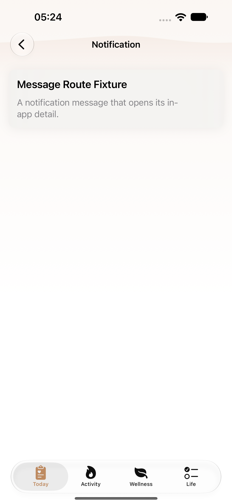
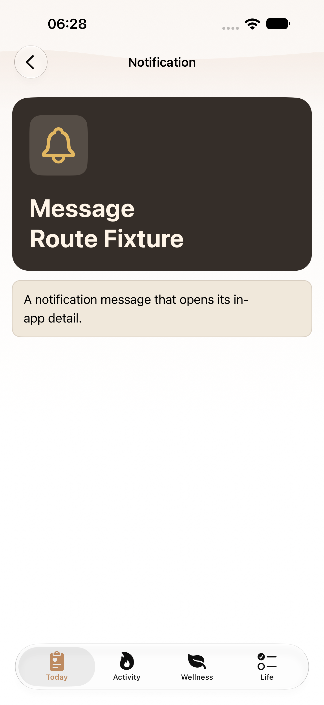
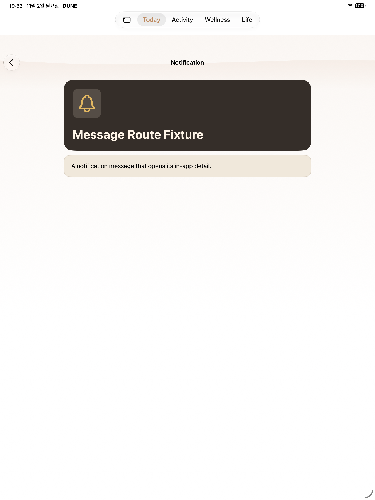
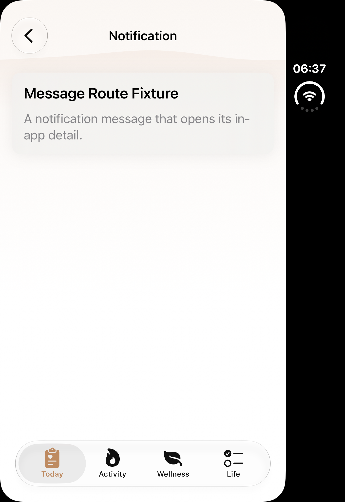
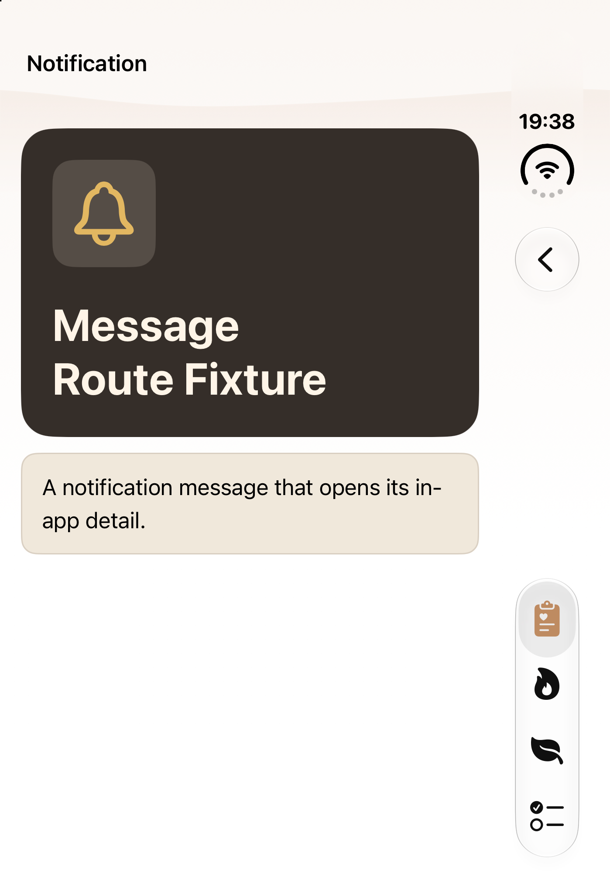
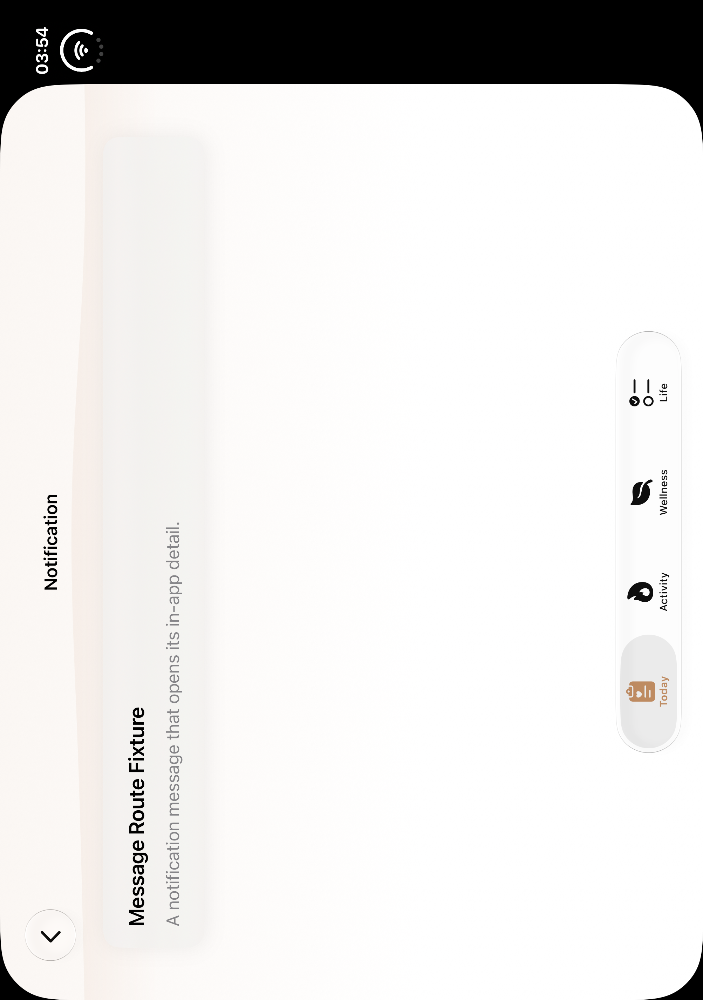
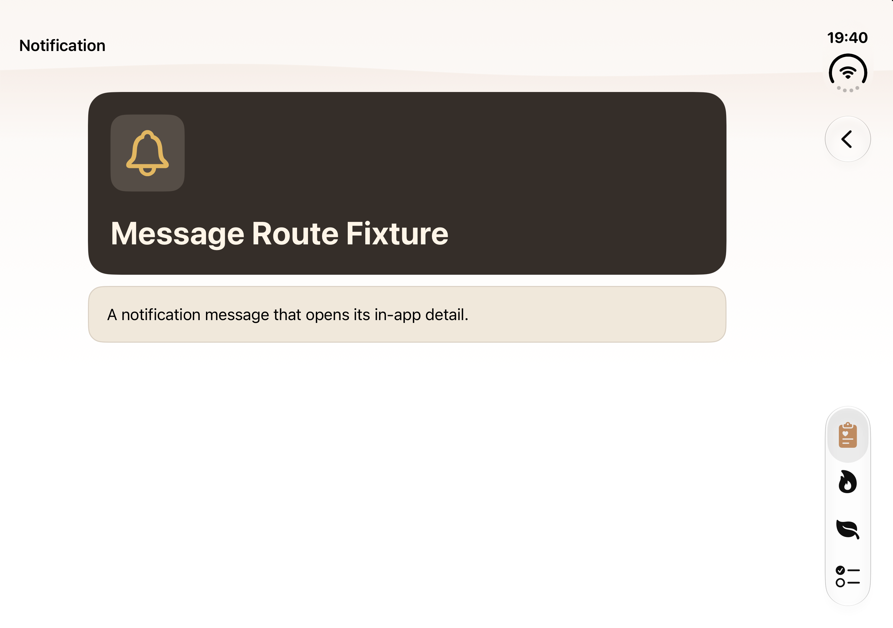

T12 · 알림 메시지
일반 iPhone·iPad·Duo 접힘·펼침의 실제 전후 자료를 정식 맵 T12 네 행에 반영했습니다. Phone normal·MAX는 역사적583 자료, iPad·Duo는 각 원본에 기록한 새 normal 실행 자료입니다.
regular
regular · 역사적 원본 · T12 메시지 상세
2026-10-13T05:24:31.828000+09:00 · [1320, 2868] · SHA256 51c8c67c03ab790cdd279bd68b99a2a2e3805a273ac0696ea7f3aa296ebc8586
Per-image revision unknown; global443 dirty metadata is separate. October13 historical native original; Duo angle/status/window unverified, no new pose proof.Phone · 기본 상세 · 10월31일 역사적583
2026-10-31T06:28:28.887000+09:00 · [1320, 2868] · SHA256 e585fc34706d4f40a55c06a9ca6e05c28304b880cff3f09c26c5553f6d71571f
Historical October31 actual2PASS bundle. Exact currentT12app; current normal capture/Back-query delta not historically executed. Not new086/3fac wholeHEAD PASS. ipad
iPad mini · 개편 전 Message Route Fixture2026-10-31T13:12:03.605000+09:00 · [1512, 2316] · SHA256 549e3670e7871afdcf7cb09d109b5b5b676670f7c6d9f6a78e4aea67186e1f3a
Different before-mini1512×2316 versus forthcoming Pro13 model/UID/date/viewport. Exact T12 detail, not sibling hub8A6.iPad Pro13 · 실제 payload 검증 후 상세 · 11월2일3fac
3fac15d4 · 2026-11-02T19:32:58.739000+09:00
2064×2752 · SHA256 8933f5e8fb02b82a76c808f950fc94169fcbf1e8ac13d7d062160ed20658563f
native-XCTest-attachment duo
duo · 역사적 원본 · T12 메시지 상세
2026-10-13T06:37:58.612000+09:00 · [1398, 2034] · SHA256 4157a6516433c758e6e14910ff6fb8ce7c8e58bb47d85461ed2c754fe6aa00c7
Per-image revision unknown; global443 dirty metadata is separate. October13 historical native original; Duo angle/status/window unverified, no new pose proof.Duo 접힘 · payload 검증 완료 상세 · checkpoint005
3fac15d4 · 2026-11-02T19:38:09.736731+09:00
1398×2034 · SHA256 21f8d672cf661a5f9d087b7bdd37407f98337e7c7bf842ef429cfa2d57324009
host-file-mtime of native paired PNG; not attachment time or checkpoint deadline duo-open
duo-open · 역사적 원본 · T12 메시지 상세
2026-10-13T03:54:23.741000+09:00 · [2006, 2852] · SHA256 899734f3c6f6ecca2e97f80037cdbbf2c786c2ed6b5cfe979c9632163a759b37
Per-image revision unknown; global443 dirty metadata is separate. October13 historical native original; Duo angle/status/window unverified, no new pose proof.Duo 펼침 · payload 검증 완료 상세 · checkpoint005
3fac15d4 · 2026-11-02T19:40:16.064542+09:00
2853×2007 · SHA256 09094a75f9dcf15689aa11683730e8b8548e4dece2e330c7f5f301dcc47a2086
host-file-mtime of native paired PNG; not attachment time or checkpoint deadline ipad-normal-3fac15d4 · 추가 실제 상태
duo-closed-3fac15d4 · 추가 실제 상태
duo-open-3fac15d4 · 추가 실제 상태